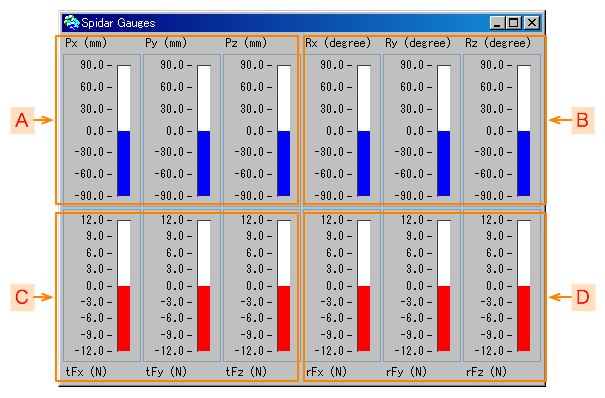

もくじ：
SPIDAR-G の情報を表示します。
グリップの位置（x, y, z）と姿勢（quaternion： 四元数の x, y, z）の６自由度、そして、SPIDAR-G に提示する力覚の並進力と回転力（トルク）を表示します。
スパイダー・ゲージを開くには、下記のツールで 「Window」->「Gauge」メニューを選択します。
スパイダー・ゲージの画面は以下のようになっています。
SPIDAR-G が接続されている場合には、ウィンドウのラベルに、スパイダー制御速度（周波数：Hz）が表示されます。
|
この数値が小さくなると、実際に感じられる力が伝わるのが遅くなっていることになります。
マシンの性能によるところが大きいですが、余計なウィンドウを閉じたり、表示しているオブジェクトを減らすなどして、マシンへの負荷を減らすと良いでしょう。